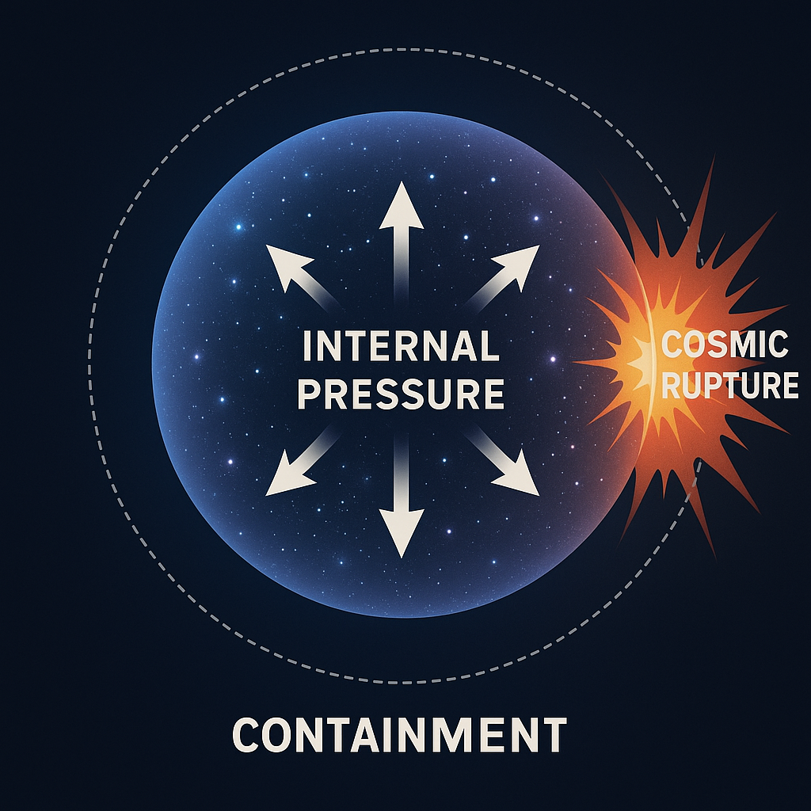
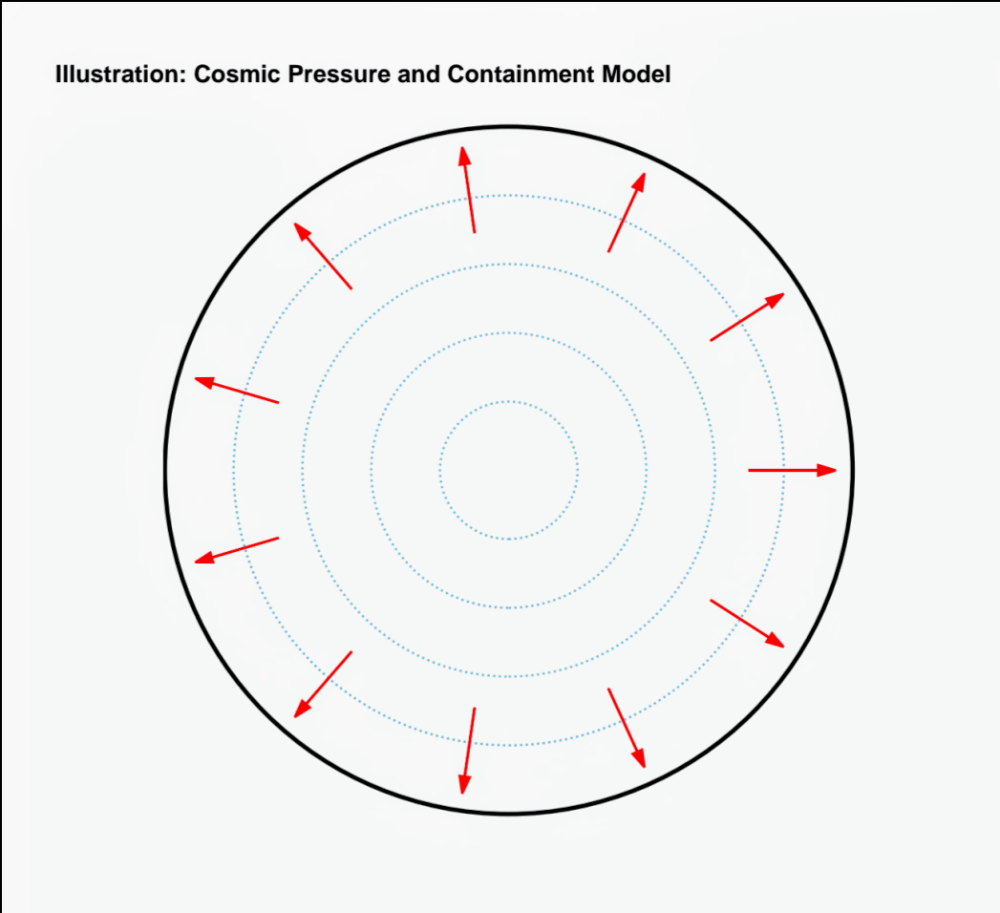
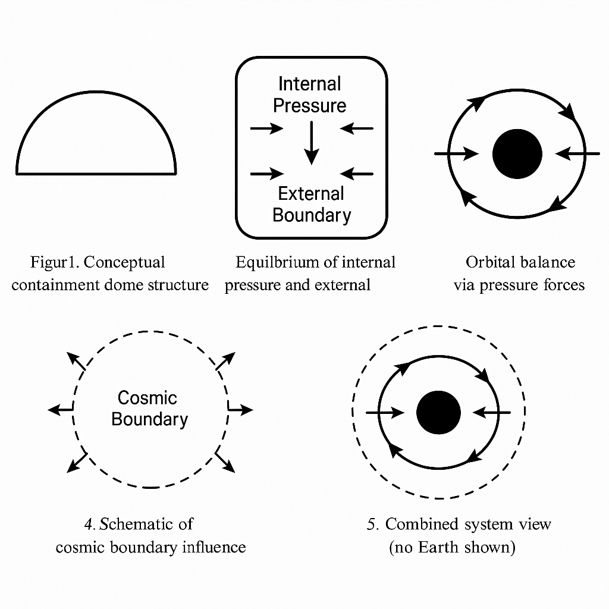

المقدمة
تقدم نظرية الضغط والاحتواء الكوني (CPC) تصورًا جديدًا للكون يقوم على توازن بين الضغط الداخلي والاحتواء الخارجي. هذا النموذج يتحدى فكرة أن الجاذبية وحدها تتحكم في تمدد الكون واستقراره.
الدلائل العلمية
- تمدد الكون: المجرات تبتعد عن بعضها بسرعة، وهو ما يتناقض مع الجاذبية ويتفق مع وجود ضغط داخلي.
- استقرار البنية الكونية: لو كانت الجاذبية فقط فاعلة، لتهاوى الكون، لكننا نلاحظ توازنًا يدل على وجود احتواء منظم.
- الثقوب السوداء: وجود حدود لابتلاعها يدل على قوة احتواء تكبح تمددها المطلق.
- إشعاع الخلفية الكونية: التماثل فيه يدل على ضغط موحد منتشر في الكون.
- عدم توازن المادة/ضد المادة: قد يكون نتيجة تدخل فيزيائي للاحتواء.
- ضغط الفراغ الكمومي: يشير تأثير كازيمير إلى وجود طاقة ضغط حتى في الفراغ.
- قصور نظرية الجاذبية: لم توحد مع ميكانيكا الكم، ما يفتح المجال لنظرية جديدة تعتمد الضغط.
- حدود الكون: تفرض فكرة الاحتواء، فاللامحدودية تتطلب طاقة لا متناهية.
- تشبيه معماري: يشبه الكون فقاعة غازية محاطة بجدار يوازن الضغط الداخلي.
- أنظمة الضغط في الطبيعة: من الدماغ إلى المحيطات، الضغط مبدأ أساسي في التوازن الطبيعي.
الصور التوضيحية



المعادلات النظرية
توازن الضغط والاحتواء: Pi = Fc
المسارات المدارية: P(r) = P0 / (1 + k*r²)
التحول الأحمر بفعل التدرج الضغطي: Δλ ∝ ∇P · d
الخاتمة
تقدم نظرية الضغط والاحتواء الكوني بديلاً جديدًا لفهم تمدد واستقرار الكون دون الاعتماد الكامل على الجاذبية. وتفتح الباب أمام نماذج وتجارب جديدة.
الباحث: عثمان مدني
البريد الإلكتروني: madniusman13@gmail.com
حقوق النشر: © 2025 عثمان مدني. جميع الحقوق محفوظة.